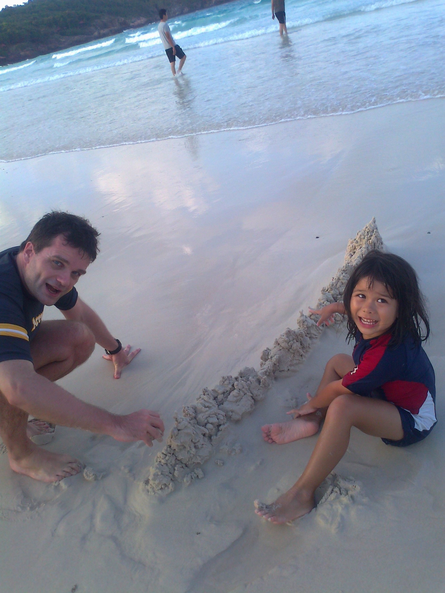
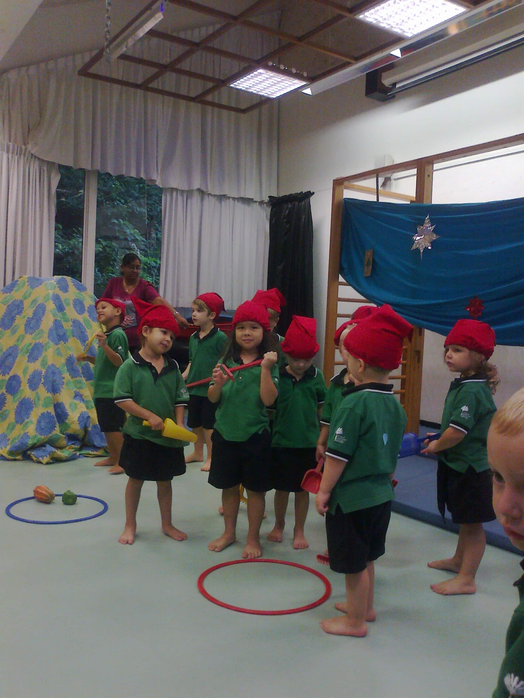
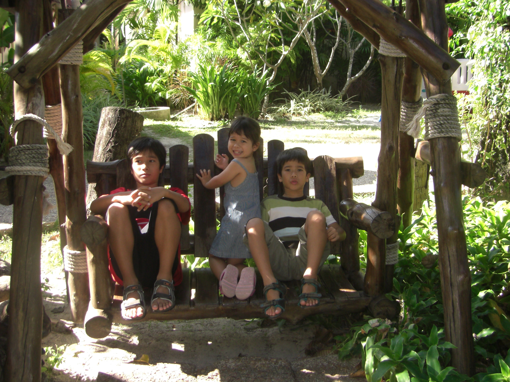

I was born in Taiwan, Hsinchu in 2006,
although I do not have any memories of living there.
After I was just a few months old, we moved to Singapore
where I spent the first five years of my life.
And even though I can't really remember much, I couldn't
have wished for a better childhood.
Constantly exploring new places,
playing with friends and too many beaches
with sandcastles.
In 2011, we finally moved to Germany where
I currently live.
Here some pictures of my time in Singapore:


